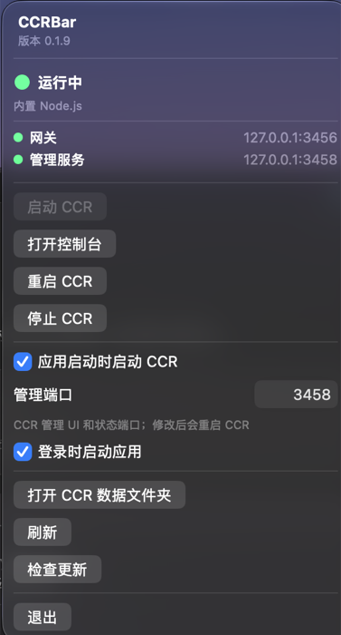

01 / CONTROL
启停，一键完成
从菜单栏启动、停止或重启 CCR；需要管理界面时，直接打开 CCR Dashboard。
NATIVE MACOS CONTROL / v0.1.11
CCRBar 是一个轻量的原生 macOS 菜单栏控制器。启动、停止、重启 Claude Code Router， 以及确认两个端口是否在线，都不必再切回终端。

/ 01 — THE SHORTCUT
CCRBar 不重写 Claude Code Router，只把每天会用到的控制和反馈，放到菜单栏这一层。 你可以继续使用 CCR 原本的能力，同时少一次终端切换。
从菜单栏启动、停止或重启 CCR；需要管理界面时，直接打开 CCR Dashboard。
Running、Stopped、Starting、Error，以及 Gateway / Management 端口状态，一眼可见。
菜单直达 Dashboard 和 `~/.claude-code-router` 数据目录，把常用路径收在同一个地方。
/ 02 — TWO WAYS IN
CCRBar 会优先识别官方 `ccr` CLI；如果你使用 Claude Code Router 桌面版，也能回退识别 `ccr-app`。 CLI 模式会从常见 Node.js 安装位置寻找可用运行时，桌面版则使用自己的 Node.js。
查看完整要求/ 03 — GET STARTED
先准备 Claude Code Router，再下载 CCRBar。启动应用后，它会出现在 macOS 菜单栏中。 CCRBar 支持 macOS 14 及以上版本。
npm install -g @musistudio/claude-code-router
安装包已通过 Apple 公证，更新由 Sparkle 自动检查。